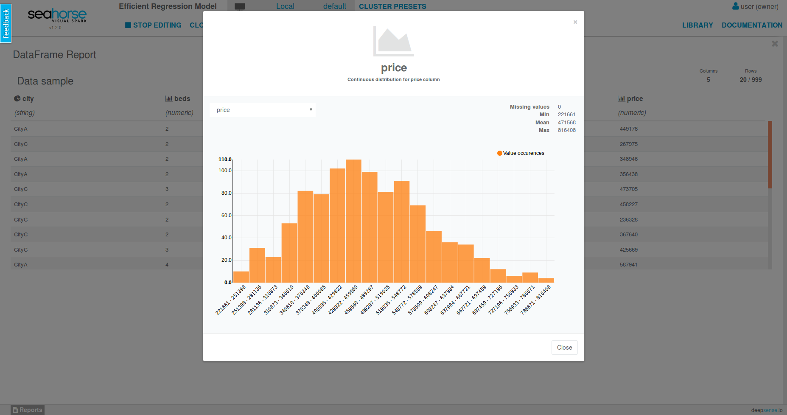
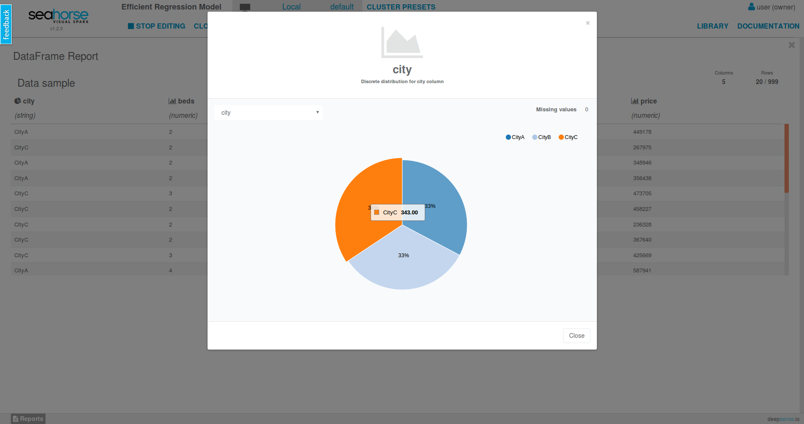
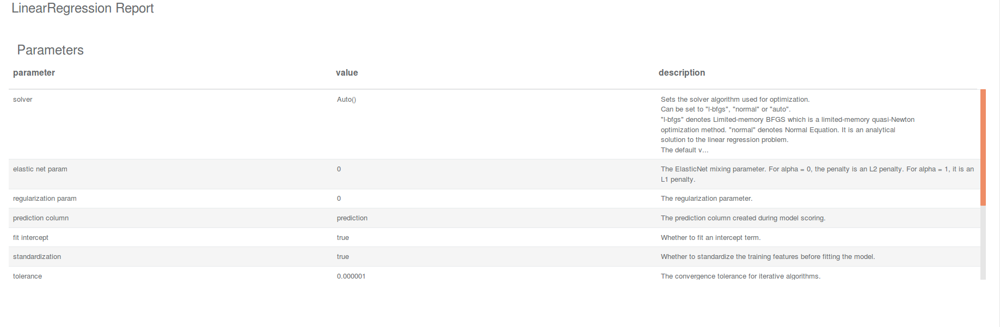

A Report gathers concise summary of any entity that can be easily presented in a human-friendly manner.
Conciseness of report allows for presenting it to user via browser even for big data Entities.
A report can contain a set of calculated descriptive statistics (e.g. for a DataFrame) that include column distributions, missing value counts etc. Reports may contain data presentable through a chart, in a tabular form or through an interactive front-end presentation.
 
